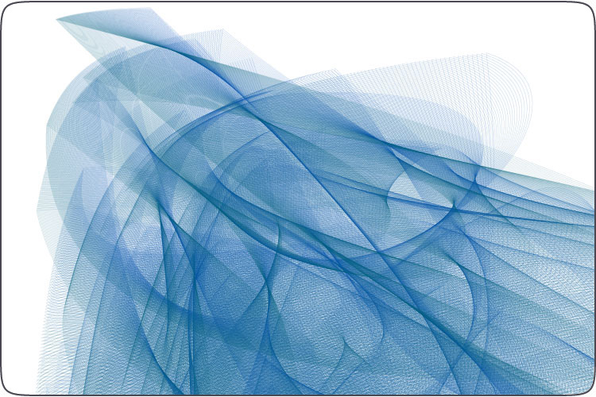
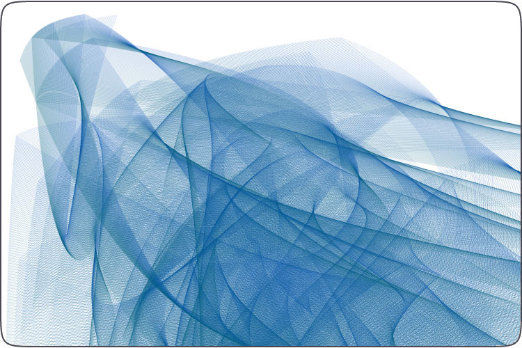

Coldfire
Coldfire uses Bézier paths to draw an organic and dynamic entity. The composition consists of one parent path (the entity's DNA so to speak) that is entirely random. This path is copied and transformed, the resulting path is copied and transformed, and so on. Slowly the entity develops its own form and structure.


Source code:
def curves(n=40): """ A random path consisting of n curves. """ autoclosepath(False) beginpath(random(WIDTH), random(HEIGHT)) for i in range(n): h1x = random(1000) h1y = random(1000) h2x = random(1000) h2y = random(1000) x = random(0, WIDTH) y = random(0, HEIGHT) curveto(h1x, h1y, h2x, h2y, x, y) return endpath(draw=False) def grow(p, n=100): """ Draw n expanding variations of a path. """ for i in range(n): points = [] for point in p: point.y *= 1.01 point.x /= 1.01 point.ctrl1.x *= 1.01 point.ctrl2.y *= 1.001 points.append(point) drawpath(points) p = points size(850, 600) colormode(CMYK) stroke(0.68, 0.25, 0.0, 0, 0.2) strokewidth(0.4) nofill() grow(curves())
Some older ice sculpture scripts include Icicle and Glacier.
Created by Tom De Smedt.